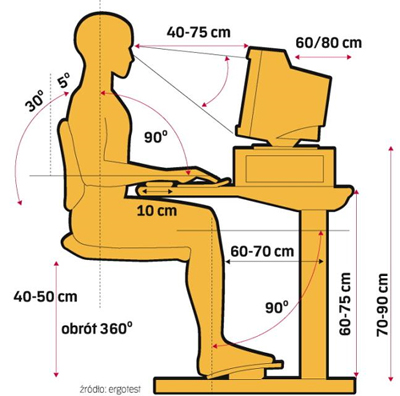

Alan Abramowski
Klasa 1 TIF
REGULAMIN PRACOWNI KOMPUTEROWEJ
Do pracowni komputerowej uczniowie wchodzą pod opieką nauczyciela i zajmują wyznaczone, stałe miejsca pracy.
Komputer można włączyć lub wyłączyć jedynie za zgodą nauczyciela.
Nie wolno samemu resetować systemu.
Na stanowisku pracy z komputerem nie wolno spożywać posiłków i pić napojów.
Uczniowie podczas lekcji zachowują spokój i powagę, sumiennie wykonują pracę, pracują przy wyznaczonym stanowisku oraz utrzymują stanowisko komputerowe w należytym porządku.
Podczas zajęć nie wolno używać telefonów komórkowych, rejestratorów, dyktafonów itp.
Wszystkie nieprawidłowości zauważone podczas pracy z komputerem należy natychmiast zgłosić nauczycielowi prowadzącemu zajęcia.
Podczas korzystania z internetu zabronione jest przeglądanie treści wulgarnych, zawierających przemoc oraz logowanie się na portale społecznościowe.
Bez zgody nauczyciela nie wolno w komputerze instalować żadnego własnego oprogramowania, gier itp. ani kopiować programów znajdujących się w pracowni na własne nośniki danych.
Nie wolno podłączać dodatkowych urządzeń, ani odłączać żadnych elementów zestawu komputerowego.
Nie wolno wprowadzać żadnych zmian w plikach systemu operacyjnego ani w systemie zabezpieczeń.
Podczas pracy z komputerem obowiązują ogólne przepisy BHP dotyczące obsługi urządzeń elektronicznych.
